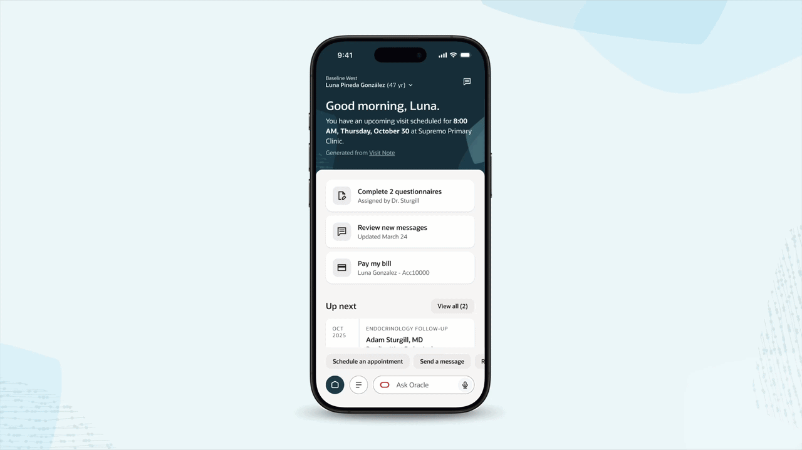

Launching a patient portal that's engaging, action-oriented, and easy to understand.
- Timeline
- Oct 2025 – present, 4 months to GA
- Role
- UX Designer II
- Team
- Oracle Health Design
- Skills
- Product strategy, interaction design, systems thinking, Figma, Codex & VS Code

The Problem
Managing your own healthcare means keeping track of a lot: upcoming appointments, prescriptions, care reminders, bills, and messages with your care team. Many of our users deal with chronic health conditions and an overwhelming amount of medical paperwork and jargon.
How might we empower patients to understand and orchestrate their own care?
The Solution
With a tailored dash serving the user exactly what they need, when they need it.
01Context
Oracle Health determined in October 2025 to rebuild their patient engagement experience from scratch. I was rescruited for this effort, and focused on designing workflows and interaction models.
Over the year I've worked on this project, I progressed from an individual designer responsible for home and settings to one of two lead designers for the product, owning half of all features and building the framework and design system. I'm now responsible for the home dashboard, messaging, settings and account management, the health record, and continued expansion of the design system.
02Home dashboard
The homepage is the first thing a patient sees every time they open the app. It needs to orient them to where they are in their health journey, and clearly lead them through what they need to do next.
User goalAs a patient, I need to know what's coming up in my care and what I need to do, so that I can stay on top of my health without feeling overwhelmed.
I designed it as a priority-ranked feed: the most time-sensitive tasks always float to the top.
An appointment tomorrow or an unread message from your doctor comes first, and the health summary below walks you from a high-level snapshot down to granular data points. The goal was to focus patients on actionable information, using patterns they already know from consumer mobile apps.

Beyond showing what's already scheduled, the dashboard recommends care a patient might need next, to encourage them to proactively learn about and plan their own health. But patients are flooded with generic health advice. A recommendation that could apply to anyone is easy to ignore, and starts to feel like noise in the app.
For a patient to care about a recommendation, it has to be clear why it's recommended for them.
So every recommendation is personal, and says so. Each card shows the reasoning behind it, drawn from that patient's own record: "based on your family history", or your age, or your last visit. Because recommendations are ranked by how relevant they are to this person, the one at the top is the one that matters most to them, not a reminder everyone else is getting too. We also serve up the correct action to close out that gap, like scheduling a visit or finding lab locations nearby.
03Medical proxy account framework
Medical proxies, like a parent managing their kid's care or an adult child helping an aging parent, are one of the messiest problems in patient-facing health software. A proxy isn't a full account holder, but they're not just a guest either. Their access can vary by relationship, the patient's age, specific legal arrangements, and state/country-specific regulations.
Making sure only the right information reaches the right people is critical for patient safety.
This was the most systems-thinking-heavy part of the project. I needed a permission model flexible enough to handle a huge range of real-world configurations, but simple enough that any patient could understand and manage it on their own.
User goalAs a parent, I need to manage my child's care alongside my own, so that I can always know whose information I'm looking at, and what I can do.
Switching between profiles is always one tap away.
I worked closely with product and engineering to map out every state a proxy relationship could be in (inviting someone, accepting, adjusting access, revoking it) and designed each step so the consequences of a choice are spelled out in plain language before you confirm anything.

04Shipping
To get our MVP shipped in 4 months, we worked very closely with engineering. And once their work was near complete, our job became making sure what shipped actually matched what we designed.
I logged and tracked visual and functional bugs across the whole product, working directly with engineers to resolve them before launch. We hit 100% design parity at GA.
05Impact ✨
- <4 mo zero to launch
- 13 users validated my proxy messaging model
- 100% design parity at GA
The portal is still just an MVP: we ship new features every month, and continue to go live in health systems around the world! Further case study details are available on request. But please,
Check us out in the App Store ↗